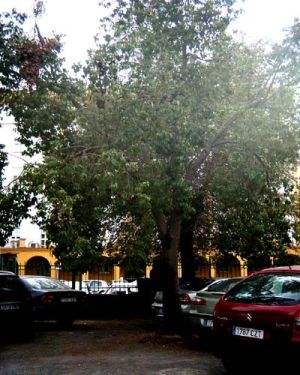
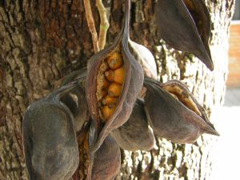

Flora ornamental del Campus de Reina Mercedes, Universidad de
Sevilla - Ficha nº 32 - Versión 1
|
Brachychiton populneum
R.Br. in Benn., Pl.
Jav. Rar. 234 (1844)
Sterculia
diversifolia G.Don
|
Esterculiáceas Dicotiledóneas |
| Brachichito, esterculia | Árbol perennifolio |
|
Árbol perennifolio de 8 m de altura, tronco recto con corteza lisa y verdosa, copa más o menos piramidal, con las ramillas colgantes. Hojas de 6-8 cm, alternas, glabras, verdes, con pecíolo largo, las juveniles pinnatisectas, las adultas enteras. Inflorescencias en panículas axiliares (1). Flores de 1 cm de longitud; acampanadas; cáliz ligeramente tomentoso al principio, luego glabro; corola de color crema, punteada interiomente de rojo. Fruto de 5-7 cm, de tipo polifolículo, con 3-5 folículos leñosos, glabros, de color negro en la madurez; semillas redondas, recubiertas de pelillos, amarillas. Florece en abril-mayo. |
 Foto: Fátima de los Ángeles Garrido Buzón, 2005 |
|  Foto: Fátima de los Ángeles Garrido Buzón, 2005 |
Observaciones:
Brachychiton, palabra
proveniente del griego brachys
(corto), y chiton
(túnica), referiéndose probablemente a la vellosidad
corta y densa, irritante al tacto, que cubre las semillas.
Populneum,
por la semejanza de sus hojas con las de un chopo,
género Populus.
Crece mejor en terrenos calcáreos. Muy resistente a la sequía. |
| Área de origen.- Natural del este de Australia. | |
| Uso en el campus: dos ejemplares, uno adulto y otro juvenil. |
Localización: E.T.S. Ingeniería Informática - Parking este |
| (1) José Manuel Sánchez de Lorenzo Cáceres; http://arbolesornamentales.com/Brachychiton.htm | |
| Fátima de los Á. Garrido Buzón (2005) & Carlos Romero Zarco (XII/2006) | |